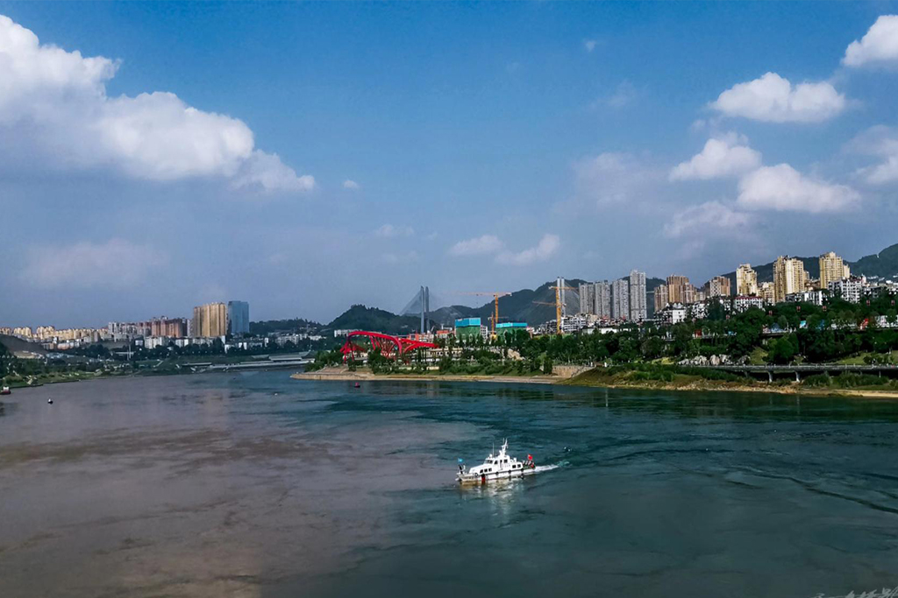

宜宾市地处长江、金沙江、岷江三江交汇处，位于长江上游，拥有悠久的历史和丰富的文化底蕴。因其地理位置独特，宜宾市被誉为“万里长江第一城”。
宜宾市拥有一面靠山、三面环水的城区，依山临水，形势险秀。自古以来，宜宾就是川南重镇，具有重要的经济、政治、文化地位。宜宾市的历史文化底蕴深厚，有 2200 年建城史、4000 年酿酒史和 3000
年种茶史。
宜宾市在长江经济带中具有重要的区位优势，金沙江、岷江在此汇合为长江，这使得宜宾市在长江流域生态保护和发展中具有独特的地位。同时，宜宾市在新能源汽车产业方面取得了显著的成果，特别是动力电池产业，使其在全球新能源汽车产业链中具有重要的话语权。
地理位置：宜宾市位于四川省西南部，地处长江、金沙江、岷江三江交汇处。在这里，金沙江和岷江汇合成为长江，标志着长江干流的正式开始。因此，宜宾被认为是长江的发源地之一，拥有“万里长江第一城”的地位。
历史文化：宜宾市具有悠久的历史文化底蕴，距今已有 2200 年建城史、4000 年酿酒史和 3000
年种茶史。作为古代川南重镇，宜宾在历史上曾被称为“僰道”、“戎州”和“叙州城”，均彰显了其在政治、经济、文化方面的地位。
长江经济带：宜宾市作为长江上游的重要城市，地处长江经济带的核心区域，具有优越的区位优势。长江经济带是我国南北方经济协调发展的战略纽带，宜宾市的“万里长江第一城”地位也因此得以凸显。
生态保护与发展：宜宾市致力于长江流域生态保护和发展，积极推进绿色发展模式，充分发挥长江经济带的生态、资源和区位优势，推动经济社会发展。在新能源汽车产业方面，宜宾市取得了显著成果，特别是动力电池产业，使其在全球新能源汽车产业链中具有重要的话语权。

宜宾市作为万里长江第一城，不仅拥有独特的地理位置、丰富的历史文化底蕴，还在新兴产业发展方面取得了骄人的成绩，展现出新时代高质量发展的生动实践。